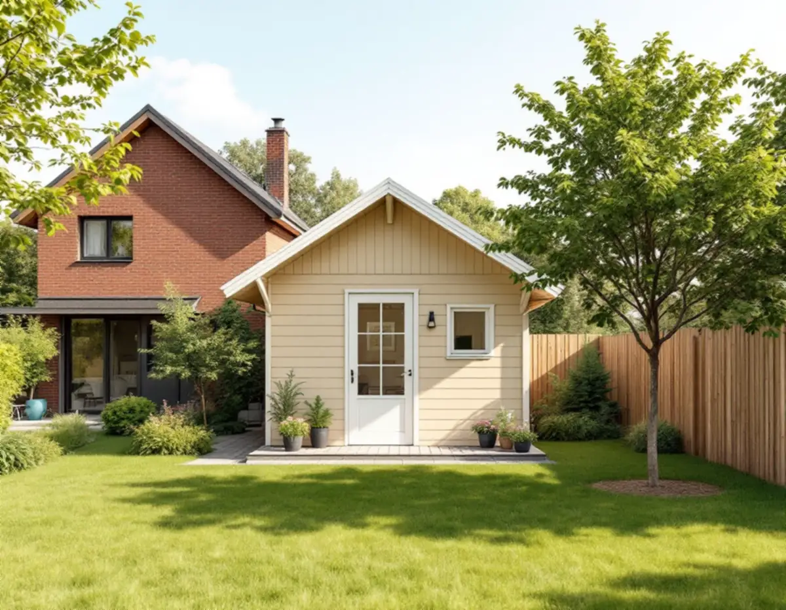
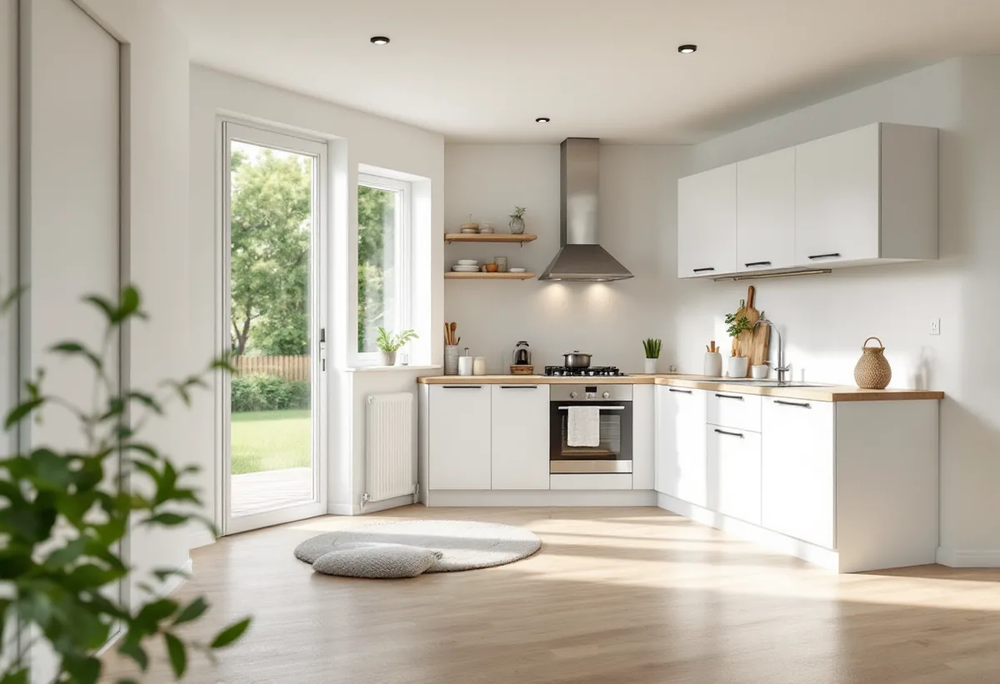

Hustypen
Villa, kedjehus eller radhus – vi tar reda på vad som gäller för tomten.
Bor du i radhus eller kedjehus i Sollentuna kan förutsättningarna för ett hus på tomten vara andra än för en fristående villa. Geal Entreprenad AB bygger komplementbostadshus nyckelfärdigt och jämför gärna med alternativet att inreda en bostad i det befintliga huset.

Ett komplementbostadshus ska enligt plan- och bygglagen komplettera ett en- eller tvåbostadshus, stå inom tomten och ha mindre byggnadsarea än huset det kompletterar. Sollentuna kommun skriver att möjligheterna att använda de lovbefriade åtgärderna skiljer sig för den som bor i ett radhus, kedjehus eller annat sammanbyggt småhus, beroende på hur bebyggelsen är utformad, och hänvisar till kommunens Kontaktcenter för vägledning.
För en friliggande villa är förutsättningarna enklare att bedöma. I en radhuslänga eller ett kedjehusområde tar vi med fastighetsgränserna, husets byggnadsarea och vad som redan står på tomten till kommunen innan något ritas. Kommunen påpekar också att en lovbefriad komplementbyggnad som hör till något annat än ett en- eller tvåbostadshus måste stämma med detaljplanen, medan småhusens komplementbyggnader inte har samma krav.

Den som vill ge plats åt ett vuxet barn eller en hyresgäst kan också inreda ytterligare en bostad i villan. Sollentuna kommun skriver att det i de flesta fall går utan bygglov i ett enbostadshus, men att du gör en anmälan och får startbesked innan arbetet börjar. Till anmälan hör situationsplan på tomtkarta, plan- och sektionsritningar, redovisning av ventilation, förslag på kontrollplan och en beskrivning av brandskyddet. Bygglov krävs om huset inte är ett enbostadshus eller om fastigheten eller byggnaden är kulturhistoriskt värdefull.
Ett komplementbostadshus ger i stället en egen byggnad, men tar del av tomtens pott. Även det kräver anmälan när du installerar ventilation, vatten och avlopp, eldstad, rökkanal eller imkanal. Ska den extra bostaden inredas i ett nytt enbostadshus och strida mot detaljplanen skriver kommunen att lov för inredningen ska sökas samtidigt som bygglovet för huset. Om att bygga ut på höjden eller åt sidan finns mer under tillbyggnad i Sollentuna.
Sollentuna kommun beskriver en sammanlagd pott per tomt för komplementbyggnader och komplementbostadshus: 45 kvadratmeter inom detaljplan och 65 kvadratmeter utanför. Tidigare attefallshus och friggebodar räknas in. En enskild byggnad inom detaljplan får vara högst 30 kvadratmeter och 4 meter till nocken.
Tillbyggnader på huvudbyggnaden har en egen gräns. Enligt kommunen krävs bygglov när de lovbefriade tillbyggnaderna på ett en- eller tvåbostadshus sammanlagt blir mer än 30 kvadratmeter, och där räknas tidigare skärmtak och attefallstillbyggnader in. Med kommunens uppdelning tar ett gammalt skärmtak på villan alltså inte av attefallshusets yta, men en friggebod gör det. Vi går igenom tomten och skriver upp vad som finns innan ytan bestäms.
Kommunen skriver att många åtgärder inte längre granskas innan bygget börjar och att byggherren själv ansvarar för att lagens krav uppfylls, bland annat att det som byggs är lämpligt utformat och anpassat. Ligger fastigheten inom ett kulturhistoriskt särskilt värdefullt område krävs bygglov, och huset får inte heller placeras närmare än 30,0 meter från ett järnvägsspårs mitt utan infrastrukturförvaltarens skriftliga medgivande.
Vill du vara säker kan du söka ett frivilligt bygglov, och byggnadsnämndens beslut visar då att huset uppfyller kraven. För en ansökan om bygglov för en komplementbyggnad räknar kommunen upp ansökan via e-tjänst, förslag på kontrollplan, situationsplan och plan-, fasad- och sektionsritningar, och i vissa fall anmälan av kontrollansvarig. Fler projekt på villatomten beskrivs under byggföretag i Sollentuna, och mått och paragrafer i reglerna för attefallshus.
Villa, kedjehus eller radhus – vi tar reda på vad som gäller för tomten.
Fristående hus eller en ytterligare bostad i villan.
Befintliga bodar och tidigare attefallshus räknas in.
Ritningar, kontrollplan och vid behov frivilligt bygglov.
Grund, stomme, installationer och ytskikt – nyckelfärdigt.
Slutgenomgång och handlingarna du behöver spara.
Skatteverket ger inget rotavdrag för att bygga ett helt nytt hus eller en liknande fristående byggnad, och det ges inte heller något rotavdrag för att bygga en helt ny bostad. Ett attefallshus räknas därför utan avdrag. För arbete i ett befintligt småhus ställer Skatteverket bland annat kravet att bostaden är äldre än fem år och att större delen av den ursprungliga stommen behålls, så vid en bostad i villan stämmer vi av arbetet mot reglerna innan kostnadsförslaget skrivs.
Husets storlek och planlösning, kök och badrum, grundläggning, avståndet till villans ledningar och hur material kan bäras in mellan sammanbyggda hus. Efter ett kostnadsfritt platsbesök får du ett skriftligt kostnadsförslag.
Komplementbostadshus på tomten.
Attefallshus →Takbyte, takbesiktning och plåtarbeten.
Takläggare i Sollentuna →Norrviken, Tureberg och Edsberg.
Takrenovering i Sollentuna →Villastad, radhus och ventilationen.
Badrumsrenovering i Sollentuna →Tillbyggnad, tomtdelning och lov.
Byggföretag i Sollentuna →Ny kulör och lov i villastaden.
Fasadmålning i Sollentuna →Villor och radhus i Sollentuna.
Fasadrenovering i Sollentuna →Buller, ljudglas och radhus i Sollentuna.
Fönsterbyte i Sollentuna →Täta gamla fönster med ventilationen i åtanke.
Fönsterrenovering i Sollentuna →Radhus i Sjöberg och villor nära stationerna.
Golvläggare i Sollentuna →Massivt trä eller lamell – vad går att slipa.
Golvslipning i Sollentuna →Villastad och radhuslängor.
Köksrenovering i Sollentuna →Villor och radhus i Sollentuna.
Målare i Sollentuna →Radhusplåt, bleck och rännor i Sollentuna.
Plåtslagare i Sollentuna →Altaner, uterum och bryggor.
Snickare i Sollentuna →Ansökan, solceller och radhus.
Takbyte i Sollentuna →Ny tapet efter prov av väggen.
Tapetsering i Sollentuna →På höjden, nya byggregler och ritningar.
Tillbyggnad i Sollentuna →Radon med i planen för hela huset.
Totalrenovering i Sollentuna →